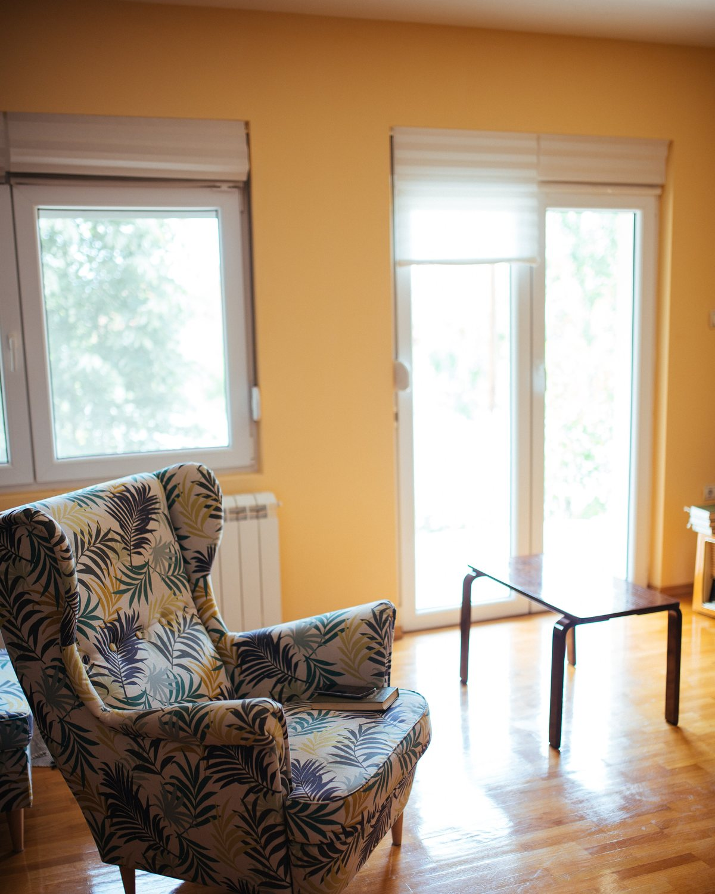

A clear list, so a big move doesn’t feel like one giant pile.
Most families I work with don’t need more advice. They need an order of operations: what to decide first, what can wait, and who will handle the heavy lifting. This checklist is the one I walk through with them — and you can print it and use it at the kitchen table.
Use this as a shared list for everyone involved. You do not have to finish a section before starting the next. Most planned moves take about six months to a year; if time is short, we can compress the steps.
Month 1 · Before you decide
Get clear on whether a move is the right step
A fair pause. Selling is not automatically the best financial decision. In-home caregivers, a senior placement advisor, or a reverse mortgage through Reverse Lending Partners can make staying possible. If that’s the better path, the rest of this list can wait.
Months 1–2 · Assessment
See the house clearly, on paper and in person
Months 2–5 · Sorting
One room at a time, not the whole house at once
Months 3–7 · Selling, donating and clearing
Give each category of “stuff” a destination
You don’t have to make those calls yourself. I personally coordinate the outreach, the auction or cleanout, and the people who do the heavy lifting.
Months 5–8 · Getting the house ready
Prepare the home for photos, showings and closing
Months 6–12 · The move and the new place
Arrive, unpack and close the loop
If you’re helping a family member
Keep everyone in the loop
Melissa Kiehl, REALTOR®, PSA, SRES® · Keller Williams Legacy Partners · 29 S. Main Street, Suite 204, West Hartford, CT 06107 · 860.480.4169 · melissakiehl.com · CT License RES.0802690
Where I come in
The list is yours. The heavy lifting doesn’t have to be.
The plan
We walk through this checklist together, at your pace, and mark what matters most in the next month.
The coordination
I personally arrange the outreach, auction or cleanout, and junk removal, so those calls aren’t added to your list.
The landing
When it’s time, I help with unpacking at the new place, so the move is finished — not just the sale.

An honest perspective
The first checkbox is whether to move at all
A checklist can make a move feel inevitable. It shouldn’t. For some families, staying in the home you love, with the right help, is the better financial decision, and I will say so.
I’m a real estate agent, not a lender or a care provider. I’ll introduce you, and you decide what fits.
In-home caregivers
Help with daily routines, meals or rides, so staying home stays comfortable and safe.
Senior placement
When a community is the right next step, a placement advisor can help you compare places and levels of care.
Reverse lending
For some homeowners, a reverse mortgage through Reverse Lending Partners can unlock home equity without selling.
In their words
Families I’ve walked through it with
Melissa is the best in the business! She is knowledgeable, caring, hard working, and trustworthy. We bought our home in 2022, Melissa worked nonstop to help us find our home! Through countless showings, offers and negotiations she made sure we got the home that was meant for us! She also sold my mother’s home for her in 2023. The way she went above and beyond for my mother was unbelievable. My family is so grateful for her! Anyone looking for a realtor buying or selling will not be disappointed with Melissa!!!
Brandee I.Her mother’s home sold in 2023 · Google review
We were fortunate to have Melissa Kiehl as our realtor . She guided us through the entire process of selling our home . She is a problem solver and has great team of individuals that assist her . I will refer her to friends and family . My wife and I will utilize her services in the future . Again Melissa , Thank you so much . Jon and Jeanine
Jon W.Sold their home · Google review
I contacted Melissa based on a recommendation from a friend. She was an absolute treat to work with, pointing out things I never would have noticed and making sure I understood the potential expenses involved to repair them. This girl knows EVERYTHING. Tile, electrical, furnaces, construction and a whole lot more. Such an amazing and knowledgeable agent! I also asked her to sell my condo, and she handled both ends like a pro, perfectly coordinating the closing dates so my move was painless. I completely understand why my friend recommended Melissa. Thank you for everything!
Jen C.Bought a home and sold her condo, with the closings timed together · Google review
Melissa is amazing! I couldn't have asked for a better experience selling my home. Melissa was incredibly educated, navigating the market perfectly. She was also a source of great comfort and support during a deeply difficult time. I highly recommend her to anyone looking to buy or sell.
Brittni E.Sold her home during a difficult time · Google review
I’m a REALTOR® with KW Legacy Partners in West Hartford. A lot of my work is helping families make a longtime house manageable — the decisions, the timeline and the people who do the heavy lifting. You’ll work with me directly.
I hold the Seniors Real Estate Specialist® (SRES®) designation. More than anything, I try to be the calm person in the room who tells you the truth, including when a move is not the right next step.
REALTOR®
SRES®
PSA
KW Legacy Partners
Common questions
Questions people usually ask
When should we start this checklist?
Most families are more comfortable starting 6 to 12 months before they hope to be settled. The first items are a conversation about why you might move, and an honest look at whether staying could be the better financial decision.
Do we have to finish every item before the house is listed?
No. Sorting, donations, auction, cleanout and listing prep can happen in stages. The house does not need to be empty on day one.
Is this only a list, or can you help with the work?
The checklist is a starting point. I personally coordinate outreach, auction or cleanout, junk removal and unpacking help at the new home, so you aren’t making those calls alone.
Is there a cost to talk through the checklist with you?
No. The first conversation is simply a conversation. If it turns out staying home is the better choice, that’s a good outcome too.
When you’re ready
Let’s walk through the list together
There’s no rush and nothing to sign. Tell me where you are in the process, and I’ll reach out personally.
I ask for a mailing address rather than an email, because I’d rather send you something of value versus adding you to a list.